— разновидность машинного обучения, при котором программа работает по принципу человеческого мозга.
Midjourney позволяет генерировать абсолютно любые картинки с возможностью расширения вариантов и увеличения качества картинки.
При текстовых запросах "Space cowboy" и "Wandering in space nomad of forbidden place" нейросеть рисует четыре изображения очертания людей с окружением, соответствующим описанию:
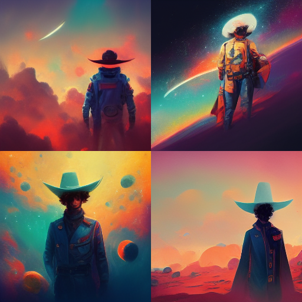 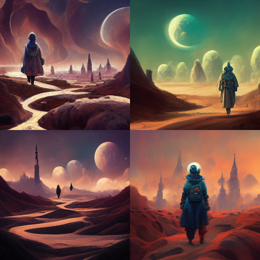
Есть возможность использования функции увеличения разрешения и детализации одной из предложенных картинок. Воспользуемся функцией для последнего рисунка:
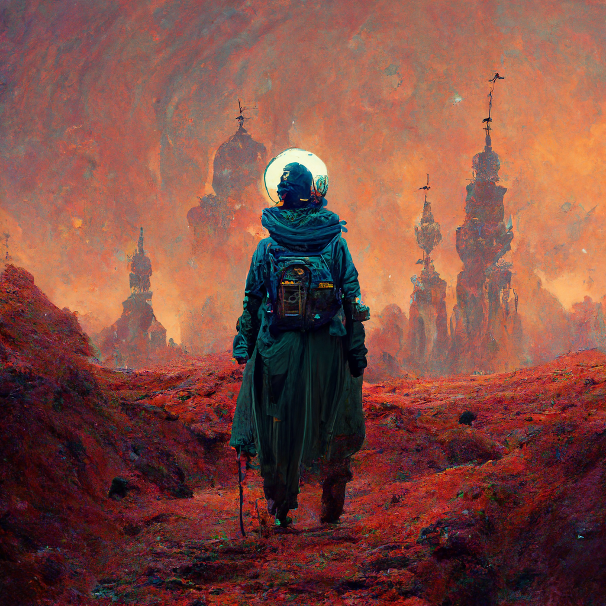
Хотите красивые пейзажи? Только спросите у Midjourney, и она представит вам по 4 шедевра на каждый запрос!
Итак, попросим её нарисовать "Ocean dunes", а также зимний город запросом "Winter's city side":
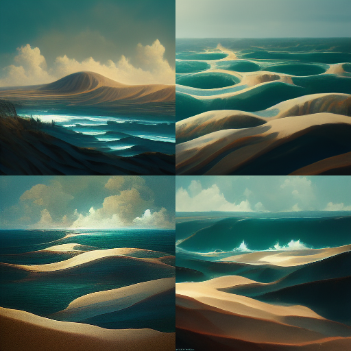 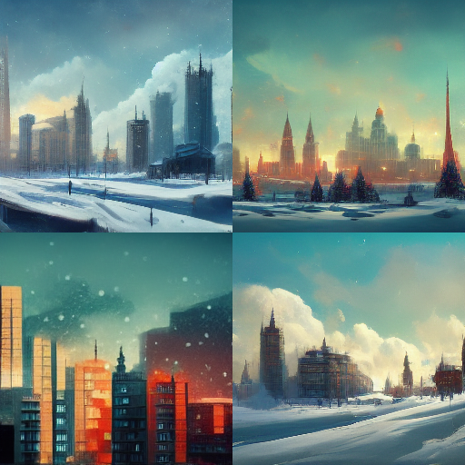
Далее следуют примеры работы сети на абсолютно разные запросы:
"Cyberpunk" и "Back to the future"
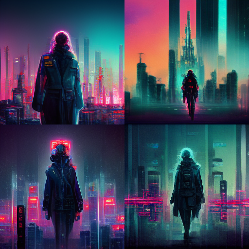 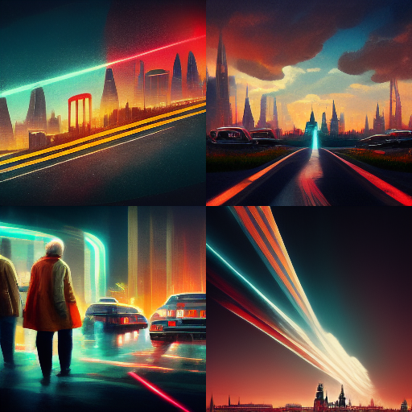
"Sunny beach with mountains and palm trees" и "Disco Elysium"
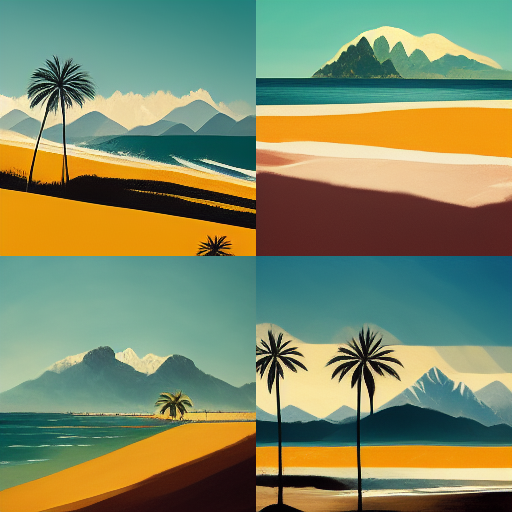 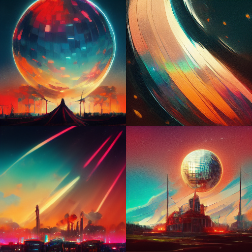
"Yggdrasil" и "Coffee cup"
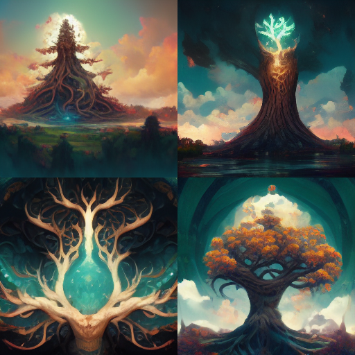 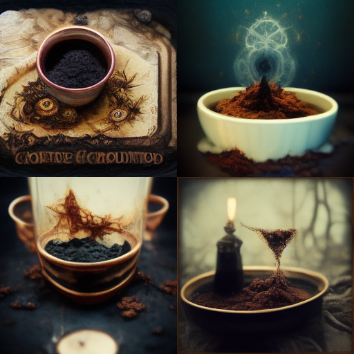
"Victorian true crime" и "Invisible flying car from future with flaming tires and energy shield"
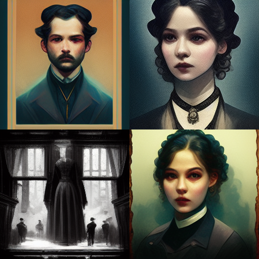 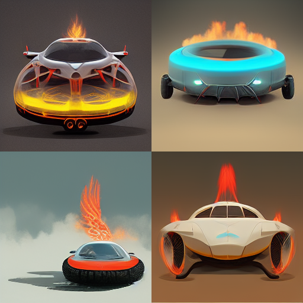